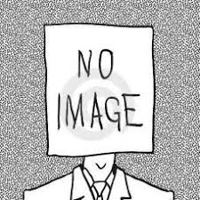

Welcome to my blog
Home
About Me
Things I like
Contact
ME

Hey. Thanks for visiting me. So my name is Nuruddin
and I am a first year undergraduate here at IIT Kharagpur.
I am from the place called Bhavnagar in Gujarat,India.
I have a patch of white hair on my head too which happened
due to some disease. No fancy style or anything.
I am 18 years of age and still haven't done much in life.
And I am a master procrastinator.
So coming to things I like. I like reading stuff(mostly fantasy-fiction
and stuff similar to it). And sleeping too. I like to do some coding too
I guess(pretty basic though). I like gaming too but more on consoles
like the PlayStation I have at home than PC gaming. And I like to
watch movies too.
There are many things which I don't like about me too. List out the bad things
too,eh. I have a very weird nature. I hardly talk. Due to that people think that
I am arrogant or don't have much interest in them. That is not true at all. But I
guess thats what I give on. Also I am a pushover. The biggest one there is.